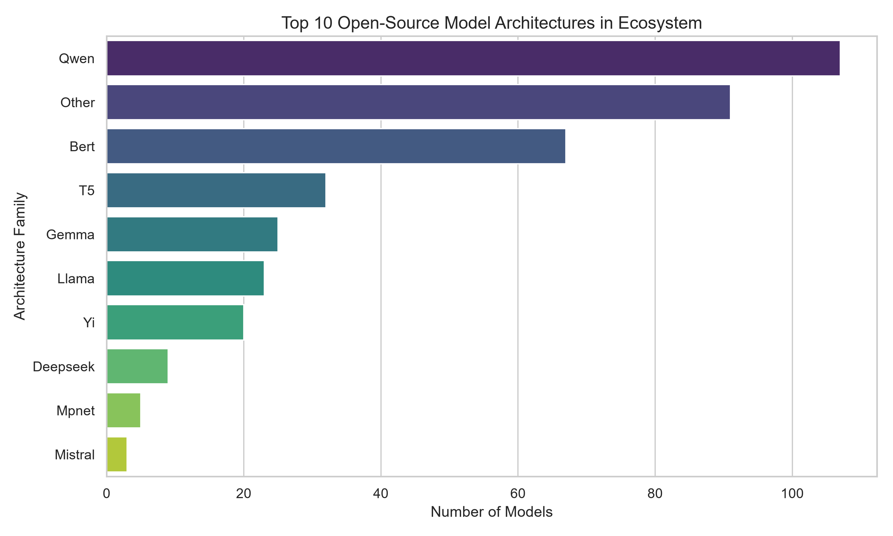
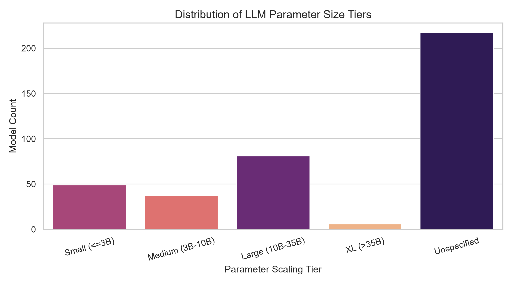
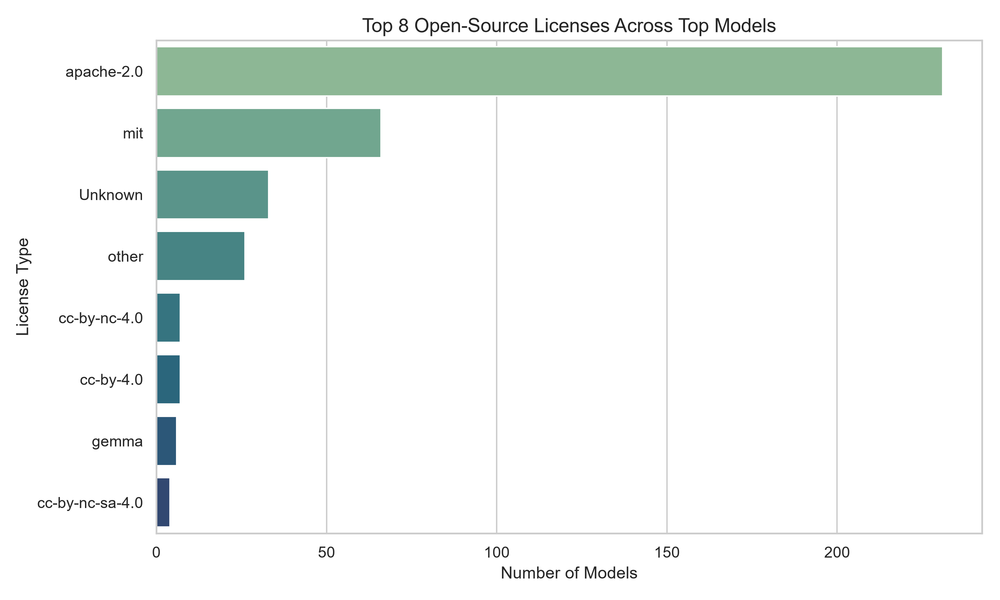
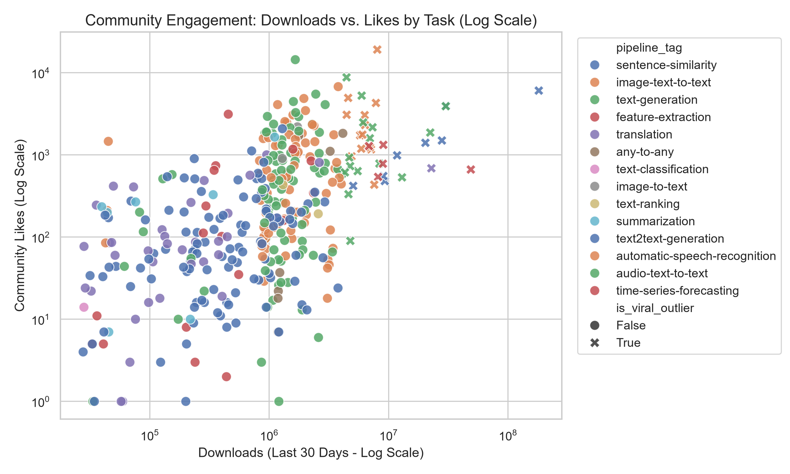
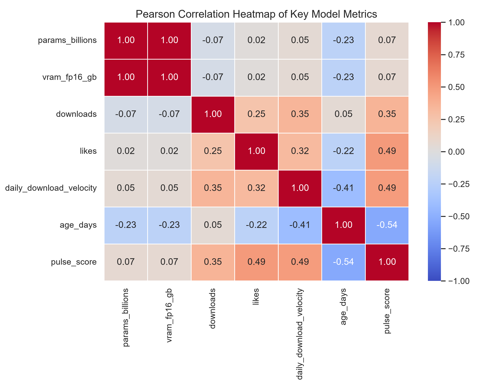
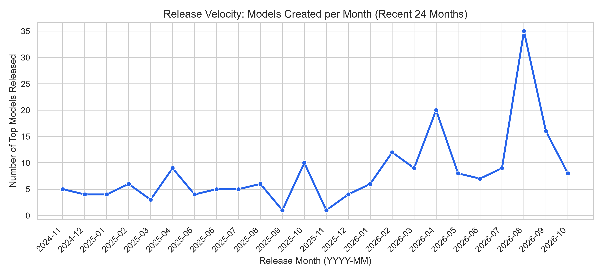
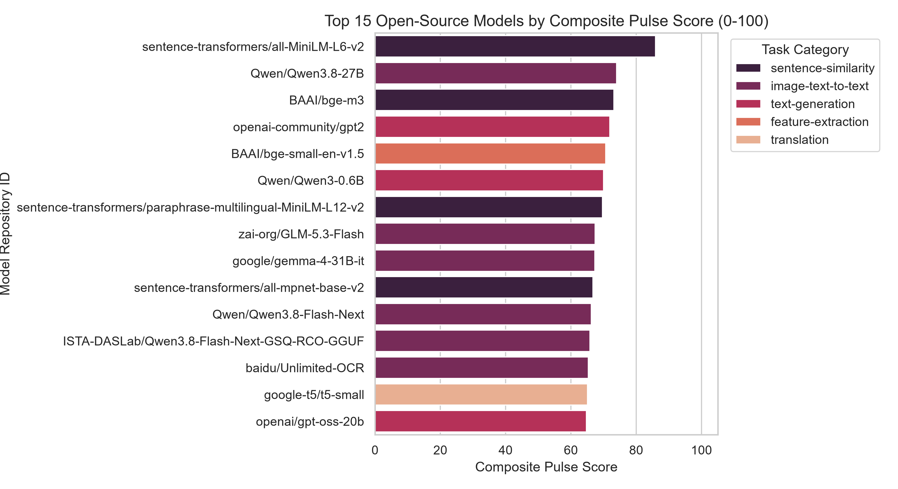

1. Top 10 Open-Source Model Architectures
Dominance breakdown across Llama, Qwen, Mistral, BERT, Gemma, and specialized open-source families.

A multi-category data engineering pipeline that extracts 400+ open-source AI models from the Hugging Face REST API, validates schemas via Pydantic v2, engineers 24 benchmark features (VRAM footprints, quantization formats, IQR viral outliers & 0–100 Pulse Score) with Pandas & NumPy, and persists to SQLite3 & CSV.
Real-time organic visualization tracking the flow of data across extraction, validation, engineering, database storage, and the final visual dashboards.
Toggle widths, minimize, or view in fullscreen using the toolbar to explore the Python-generated 300 DPI graphs.
Dominance breakdown across Llama, Qwen, Mistral, BERT, Gemma, and specialized open-source families.

Regex-extracted parameter counts grouped into Small (≤3B), Medium (3B–10B), Large (10B–35B), and XL (>35B).

Tracking research vs. commercial permissiveness (Apache-2.0, MIT, Llama3, CC-BY, etc.) based on license tags.

Mapping user adoption against likes across all pipeline categories, highlighting statistical viral outliers using IQR.

Evaluating linear relationships between params, downloads, daily velocity, age, VRAM estimation, and Pulse score.

Tracking release volume across HF repositories over the 24 most active months.

Dynamic index combining log-normalized downloads (40%), likes (30%), daily velocity (20%), and metadata tag completeness (10%).

Real-time analytics overlaying task category and data format benchmarks to complement your Python plots.
Simulate memory footprints and recommend hardware configurations based on selected precision and dataset criteria.
Filter rows by ID, licensing, parameters, or compression types. Click any column heading to change the sort order.
| Model ID (PK) ↕ | Task Modality ↕ | Architecture ↕ | Parameters (B) ↕ | Format Type ↕ | FP16 VRAM ↕ | INT4 VRAM ↕ | 30-day Downloads ↕ | Adoption Velocity ↕ | Weighted Pulse ↕ |
|---|
Inspect code files (extract.py, schema.py, transform.py, load.py, eda.py) and active process pipeline validation logging outputs.